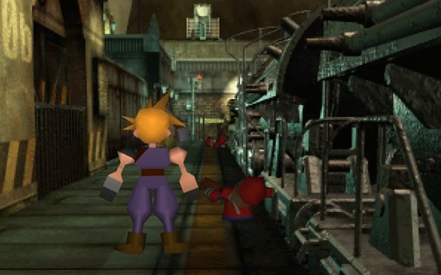
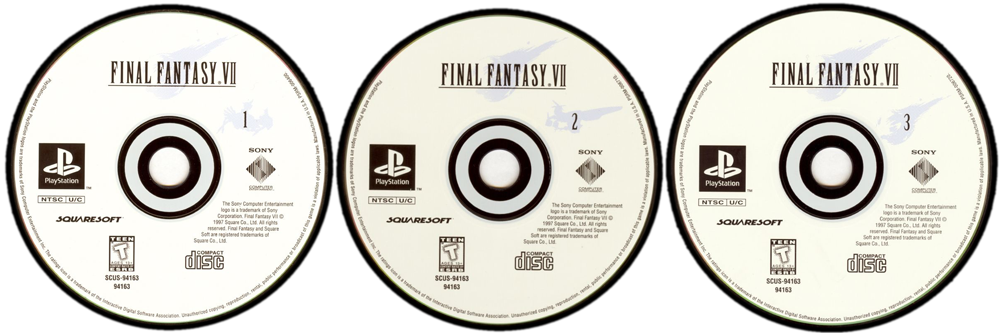
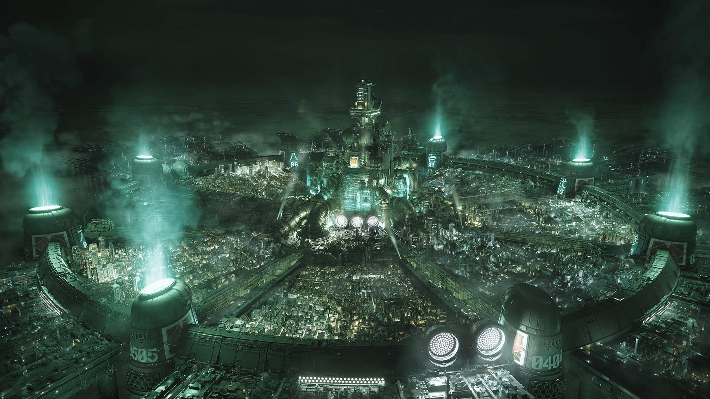
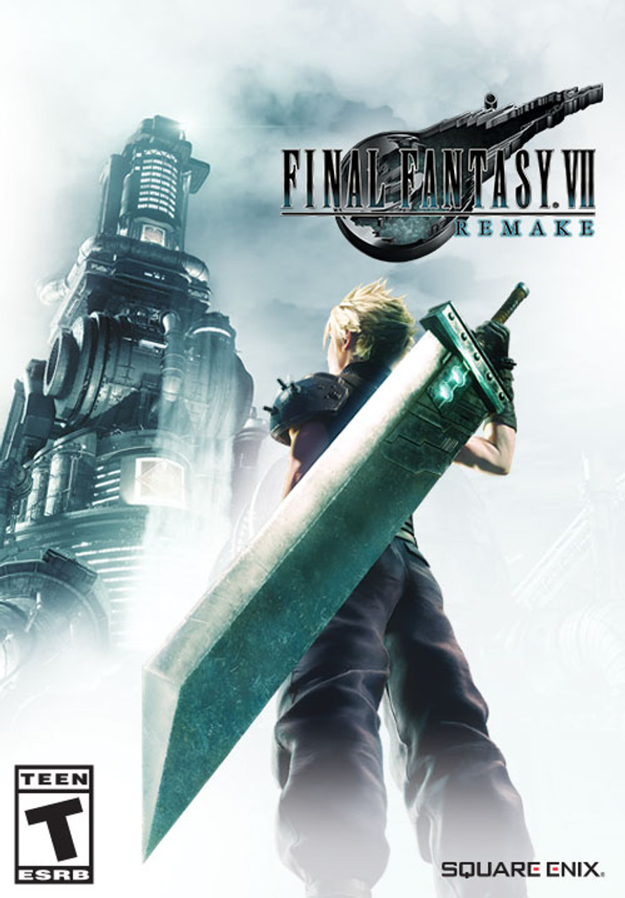
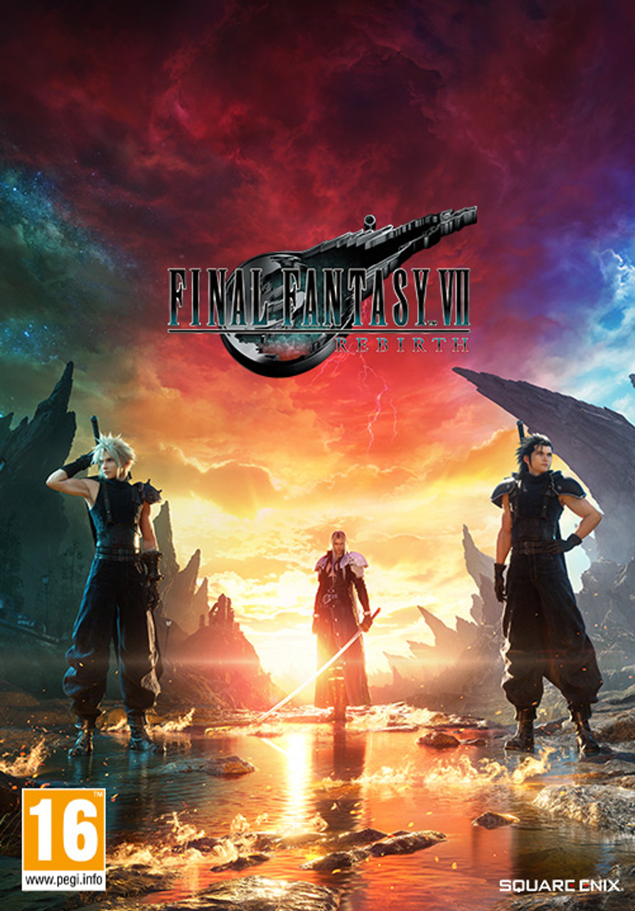
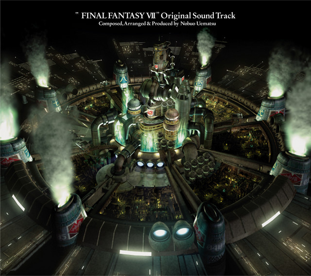

Publicado en 1997, se trata de la séptima entrega de la serie Final Fantasy y la primera de la saga en presentar gráficos tridimensionales, mostrando personajes completamente renderizados sobre escenarios prerrenderizados.


El desarrollo de Final Fantasy VII comenzó en 1994. El juego fue inicialmente concebido para Super Nintendo Entertainment System, pero su desarrollo fue trasladado a Nintendo 64. Sin embargo, dado que los cartuchos de Nintendo 64 carecían de la capacidad de almacenamiento necesaria; Square decidió publicarlo para el sistema PlayStation en su lugar, ya que utiliza el CD-ROM como soporte de almacenamiento.

Ha sido reconocido de manera retrospectiva como el juego que popularizó los videojuegos de rol japoneses fuera de su mercado natal, y por contribuir fuertemente al éxito de PlayStation. Ha sido frecuentemente posicionado entre los mejores juegos de la historia en diversas listas de videojuegos. La popularidad del juego provocó que Square produjera una serie de secuelas y precuelas englobadas en una recopilación de material multimedia conocida como Compilation of Final Fantasy VII.
| Puntuaciones de reseñas | |
| Evaluador | Calificación |
| GameRankings | 92.4% |
| Metacritic | 92/100 |
| Puntuaciones de críticas | |
| Publicación | Calificación |
| 1UP.com | A+ |
| Electronic Gaming Monthly | 38/40 |
| Famitsu | 38/40 |
| GamePro | 5/5 estrellas |
| GameSpot | 9.5/10 |
| Hobby Consolas | 96/100 |
| IGN | 9.5/10 |
| MeriStation | 10/10 |
| Official PlayStation Magazine (EEUU) | 5/5 estrellas |
| PlayStation Magazine | 5/5 estrellas |
Historia
La historia de Final Fantasy VII comienza con la unión de Cloud a AVALANCHA, liderada por Barret, cuya misión es evitar que Shinra drene la Corriente Vital del planeta, en una serie de asaltos hacia los reactores Mako, alrededor de la ciudad de Midgar. Aunque la primera misión concluye con éxito, AVALANCHA queda atrapada en otro reactor durante el segundo asalto. El reactor explota, lanzando a Cloud hacia los niveles inferiores de Midgar, a los suburbios. Este cae en una zona llena de flores, dentro de una iglesia, donde formalmente es presentada Aeris. Impulsado por la llegada de Los Turcos de Shinra, enviados a capturar Aeris, Cloud acepta ser el guardaespaldas de Aeris y la defiende de Los Turcos. Después de reunirse con Tifa, también miembro de AVALANCHA, en el sector 7; se infiltran en la mansión del líder de la delincuencia del Sector 6, Don Corneo. El grupo se entera de que Shinra ha descubierto la ubicación del escondite de AVALANCHA y planea colapsar la plataforma superior del Sector 7 sobre los suburbios. Shinra destruye el Sector 7, matando de paso a gran parte de su población y tres miembros de AVALANCHA. Los Turcos capturan a Aeris, tras revelarse que ella es la última sobreviviente de los «Cetra», (también llamados Ancianos) una raza en sintonía cercana con el planeta, y que anteriormente se creía completamente extinta. El presidente de Shinra cree que Aeris puede llevarlo a la «Tierra Prometida», una tierra mítica de fertilidad, donde espera encontrar abundante energía Mako.

Remake
En la actualidad esta en proceso un remake del juego original dividido en tres partes, ahora mismo contamos con 2 de ellas, siendo Final Fantasy VII Remake Integrade y Final Fantasy VII Rebirth.
La nueva versión fue anunciada después de años de rumores y solicitudes de fanáticos. Cuatro miembros clave del personal volvieron a ayudar con la nueva versión: el diseñador de personajes original Tetsuya Nomura regresó como director y diseñador de personajes principales, el director original Yoshinori Kitase actuó como productor, Kazushige Nojima volvió a escribir el guion y el compositor Nobuo Uematsu. Debido a la escala del proyecto, el equipo decidió lanzar una nueva versión como videojuegos múltiples para que no se reduzca el contenido original. También decidieron agregar contenido nuevo y ajustar los diseños de los personajes originales para equilibrar el realismo y la estilización.



Musica
